その他のカートリッジ(日本）
詳細がほとんど不明のアナログ関連製品メーカーがある。機種数の少ないもの、ブランドの詳細が不明なものはここで扱う。このページではカートリッジ関連のみ出したブランドを扱う。
武蔵野音響研究所(光悦)
安土桃山時代の文化人・本阿弥光悦から名を拝借したカートリッジ・ブランド。刀匠でもあった菅野義信氏によって生み出された。その手作りのカートリッジは一部で有名であり、アンプデザイナー・マーク・レビンソン氏に紹介され、欧米でも知られたブランドである。
手元資料では1973年版のStereo Sound YEAR
BOOKから登場し、1981-82年版を最後に姿を消しているが、ブランド自体が消滅した訳ではなく、この頃から、瑪瑙や紫檀のボディなど特殊な材料の使用が始まり、安定供給ができなくなったものと思われる。創始者である菅野義信氏は、ネットの情報では2002年1月に亡くなったそうであり、子息・菅野文彦氏によりブランドは引き継がれたようだが、いまだ幻のブランドであり続けているようだ。
当サイトで紹介するのは1970年代から80年代初頭のスタンダートなモデルのみとなる。そのデザインはSUPEXのSD-900に似ている。この点に関しては、ネット上では菅野氏はSUPEXでカートリッジ作りの修行をしたとか、基本設計にSUPEXの朝倉氏がかかわっていたなどの噂があるが、真偽は不明である。
光悦
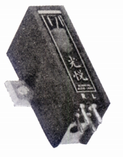
■価格 34,600円
■発電方式 MC型
■出力電圧 0.5mV
■針圧 1g〜1.5g
■再生周波数帯域 20-20,000Hz
■チャンネルセパレーション 26dB(1kHz)
■チャンネルバランス ±0.5dB
■コンプライアンス
■負荷抵抗 100Ω
■負荷容量
■内部インピーダンス
■針先 0.3×0.7mil
■自重 10.5g
■交換針
■発売
1971〜1973年
■販売終了
■備考 価格は1973年頃のもの
1975年頃は価格が32,000円(針交換12,000円)となり、
ヘッドシェル付き（38,000円)もあったようだ。
またこのころから、マグネットとヨークの異なる
受注生産の上位機種があった模様だ。
1979年頃には以下の2つのバージョンが紹介されている。
（純鉄磁気回路版）
■価格 50,000円
■発電方式 MC型
■出力電圧 0.36mV
■針圧 1g〜1.2g
■再生周波数帯域 20-50,000Hz
■チャンネルセパレーション 27dB(1〜20kHz)
■内部抵抗 5.5Ω
■針先 楕円
■交換針 針先交換(28,000円)
■自重 10.5g
■備考 ボロンカンチレバー
（コバルト鉄磁気回路版）
■価格 80,000円
■発電方式 MC型
■出力電圧 0.4mV
■針圧 1g〜1.2g
■再生周波数帯域 20-50,000Hz
■チャンネルセパレーション 27dB(1〜20kHz)
■内部抵抗 5.5Ω
■針先 楕円
■交換針 針先交換(28,000円)
■自重 10.5g
■備考 ボロンカンチレバー
HI-LECT（ハイレクト）
オーディオファイルエレクトロニクス�鰍ﾌブランド。1970年代後半にMC型カートリッジを発売していた。
2017
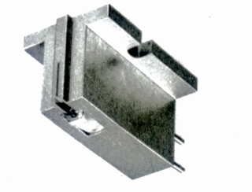
■価格 43,000円
■発電方式 MC型
■出力電圧 0.18mV(5cm/sec 1kHz
45゜）
■針圧 1.5g〜2g
■再生周波数帯域 10-50,000Hz
■チャンネルセパレーション 25dB(1kHz)
■チャンネルバランス 0.4dB
■コンプライアンス 7×10-6cm/dyne(100Hz)
■負荷抵抗 2Ω
■負荷容量
■内部インピーダンス
■針先 特殊楕円
■自重 9g
■交換針 針交換(22,000円)
■発売
1978〜79年頃
■販売終了 1980〜81年頃
■備考 価格は1979年頃のもの
アルミ2重構造カンチレバー採用。
カートリッジ以外ではリード線があった
AG-99
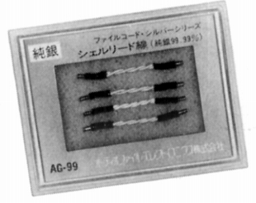
■価格 1,000円
■備考 テフロン被覆純銀線 0.1�o径×27芯×2
JMTEC（ジムテック）
ジムランとアルテックをくっけてブランド名としたメーカー。スピーカー、アンプなどの他にカートリッジも発売していた。
V-�V
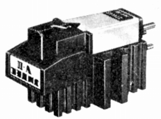
■価格 9,900円
■発電方式 MM型
■出力電圧 2.4mV
■針圧 0.8g〜2.5g
■再生周波数帯域 10-35,000Hz
■チャンネルセパレーション 30dB(1kHz)
■チャンネルバランス
■コンプライアンス 30×10-6cm/dyne
■負荷抵抗
■負荷容量
■内部インピーダンス
■針先 スーパーオーバル
■自重 6.5g
■交換針 NV-�V(6,000円)
■発売
1974〜75年頃
■販売終了 1977年頃
■備考 価格は1975年頃のもの
ヘッドシェル付き。
V-�UPROFESSIONAL
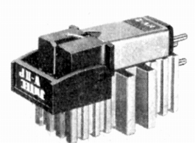
■価格 15,800円
■発電方式 MM型
■出力電圧 2.4mV
■針圧 1g〜2g
■再生周波数帯域 5-35,000Hz
■チャンネルセパレーション 30dB(1kHz)
■チャンネルバランス
■コンプライアンス 25×10-6cm/dyne
■負荷抵抗
■負荷容量
■内部インピーダンス
■針先 スーパーオーバル
■自重 6.5g
■交換針 NV-�UP(7,000円)
■発売
1974〜75年頃
■販売終了 1977年頃
■備考 価格は1975年頃のもの
V-�Vと針の差し替え可能。
パロット
詳細不明のブランド。
NM-15
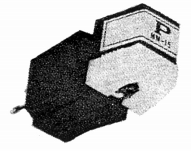
■価格 8,200円
■発電方式 MM型
■出力電圧 6mV
■針圧 1〜2.5g
■再生周波数帯域 20-20,000Hz
■チャンネルセパレーション 25dB
■チャンネルバランス
■コンプライアンス 25×10-6cm/dyne
■負荷抵抗 45〜50kΩ
■負荷容量
■インピーダンス
■針先 0.7mil
■自重 8.5g
■交換針 MM-15/7
■発売
〜1967年
■販売終了 1968〜69年頃
■備考 価格は1967年頃のもの
SATO MUSEN（サトームセン）
家電量販店サトームセンのオーディオ部門「サウンドシティ」扱いのMC型カートリッジ。アナログディスクが主流な時代の末期に登場。どこからかのOEM調達品だろう。
Zen
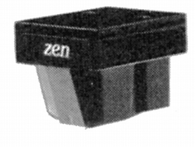
■価格 59,000円
■発電方式 MC型
■出力電圧 0.2mV(5cm/sec
1kHz)
■針圧 1.7g〜2.2g
■再生周波数帯域 20-20,000Hz
■チャンネルセパレーション 27dB(1kHz)
■チャンネルバランス
■コンプライアンス 8×10-6cm/dyne
■負荷抵抗 30Ω
■負荷容量
■内部インピーダンス 30Ω
■針先 0.6mil
■自重 10g
■交換針 現品交換(39,500円)
■発売
1981年
■販売終了 1988〜89年頃
■備考 価格は1981年頃のもの
サファイヤカンチレバー採用。
禅
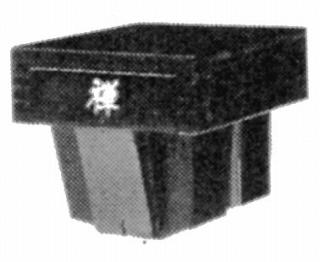
■価格 65,000円
■発電方式 MC型
■出力電圧 0.2mV(5cm/sec
1kHz)
■針圧 1.8g〜2.5g
■再生周波数帯域 20-20,000Hz
■チャンネルセパレーション 27dB(1kHz)
■チャンネルバランス
■コンプライアンス 8×10-6cm/dyne
■負荷抵抗 30Ω
■負荷容量
■内部インピーダンス 30Ω
■針先 特殊楕円
■自重 10g
■交換針 現品交換(45,000円)
■発売
1981年
■販売終了 1988〜89年頃
■備考 価格は1981年頃のもの
サファイヤカンチレバー採用。
PHYSICS（フィジックス）
メルコア ジャパン扱のカートリッジのブランド？。
Physics 95
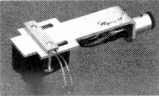
■価格 250,000円
■発電方式 MC型
■出力電圧 2.5mV(昇圧トランス出力)
■針圧 最適
1.0g
■再生周波数帯域
■チャンネルセパレーション
■チャンネルバランス
■コンプライアンス
■負荷抵抗 50kΩ
■負荷容量
■内部インピーダンス
■針先
■自重 10.5g(シェル含む）
■交換針
■発売
1984年6月
■販売終了 1988年頃
■備考 価格は1984年頃のもの
シェル及び昇圧トランス付き。
ROUNDALE RESEARCH（ラウンデール・リサーチ）
1985年登場のカートリッジのブランド。最近では古いカートリッジの修復を手がける同名の工房があるが、同一の企業なのかもしれない。
Model 2118
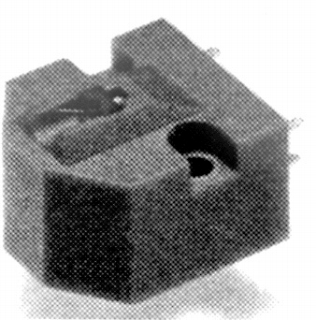
■価格 100,000円
■発電方式 MC型
■出力電圧 0.25mV(3.54cm/sec 1kHz 45゜)
■針圧 2.0〜3.0g(最適
2.5g)
■再生周波数帯域 20-20,000Hz±3dB
■チャンネルセパレーション 25dB/1kHz
■チャンネルバランス
■コンプライアンス 6×10-6cm/dyne
■負荷抵抗 3〜10Ω（トランス）/100Ω以下（ヘッドアンプ）
■負荷容量
■内部インピーダンス 4Ω
■針先 7.6×17.8μm楕円
■自重 5g
■交換針 新品交換
■発売
1985年
■販売終了 年頃
■備考 価格は1985年頃のもの
ボロン、アルミ合金の複合材カンチレバー採用。
Model 2118Phase�U
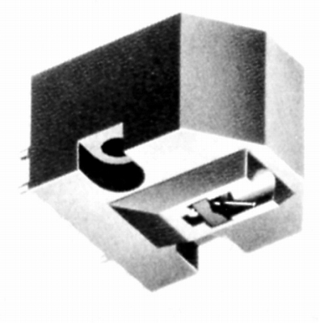
■価格 60,000円
■発電方式 MC型
■出力電圧 0.3mV(3.54cm/sec 1kHz
45゜)
■針圧 2.0〜3.0g(最適
2.5g)
■再生周波数帯域
■チャンネルセパレーション 25dB/1kHz
■チャンネルバランス
■コンプライアンス 6×10-6cm/dyne
■負荷抵抗
■負荷容量
■内部インピーダンス 4Ω
■針先 0.3×0.7mil楕円
■自重 5g
■交換針 針交換(36,000円)
■発売
1987年9月
■販売終了 年頃
■備考 価格は1987年頃のもの
アルミ合金複合材カンチレバー採用。
サイトマップへ